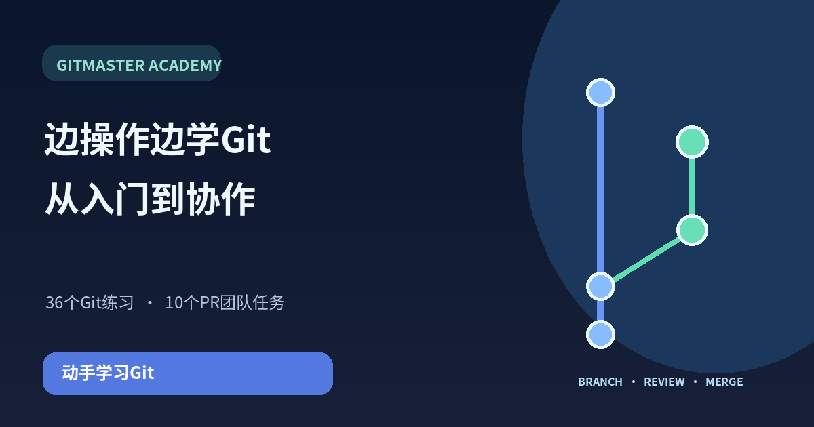

从基础开始
通过36个练习学习安装、编辑文件、diff、add、commit、分支、合并和恢复。
 KINORA温暖对话每一天，家人多一份安心认识 KINORA ↗
KINORA温暖对话每一天，家人多一份安心认识 KINORA ↗在交互式练习环境中输入Git命令，通过图示理解分支和历史，学习Pull Request、代码审查、批准与合并。
36个Git练习 · 10个PR协作任务 · PDF电子书
通过36个练习学习安装、编辑文件、diff、add、commit、分支、合并和恢复。
通过10个任务学习Draft和Ready PR、审查请求、修正、批准、CI和合并。
在终端说明和链接PDF中查阅命令和参数的含义。